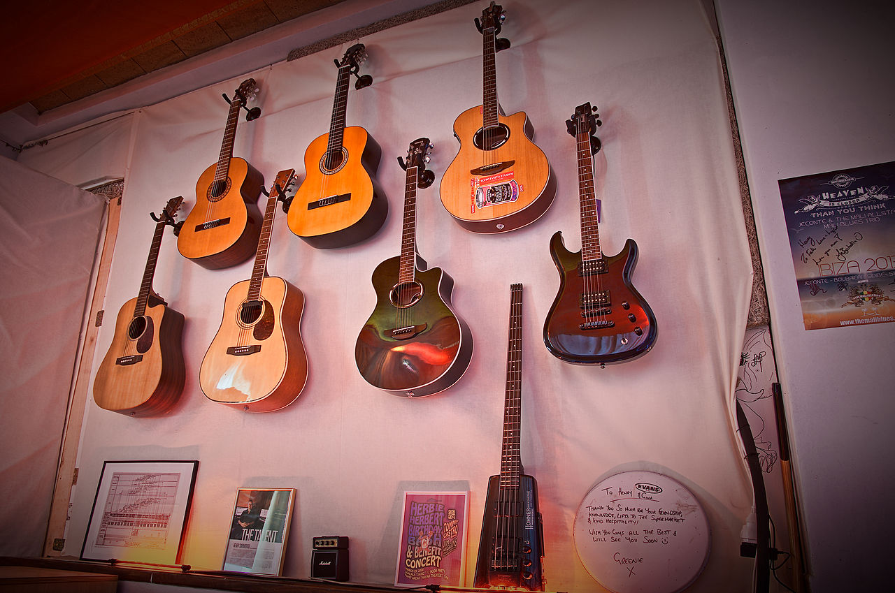
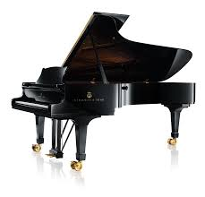
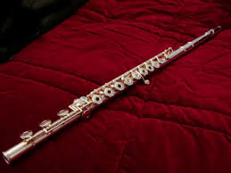

Los Pilares del Sonido

Guitarra
Un instrumento de cuerda popular en muchos géneros, desde el folk hasta el rock.

Piano
Instrumento de teclado versátil, fundamental en la música clásica y el jazz.

Batería
Un conjunto de percusión esencial para mantener el ritmo y la base en la mayoría de bandas.

Violín
Instrumento de cuerda frotada, conocido por su tono expresivo y su papel en orquestas.

Saxofón
Un instrumento de viento-madera popular en el jazz, blues y música contemporánea.

Flauta
Instrumento de viento-madera antiguo, que produce sonidos melódicos y aireados.